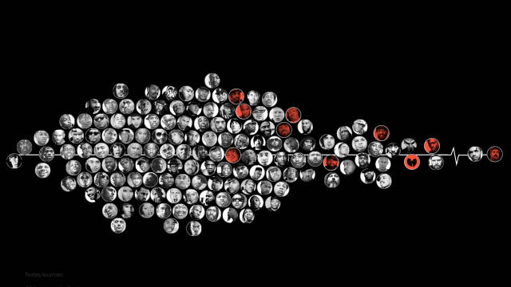
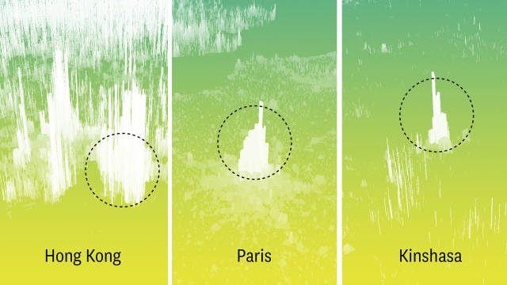
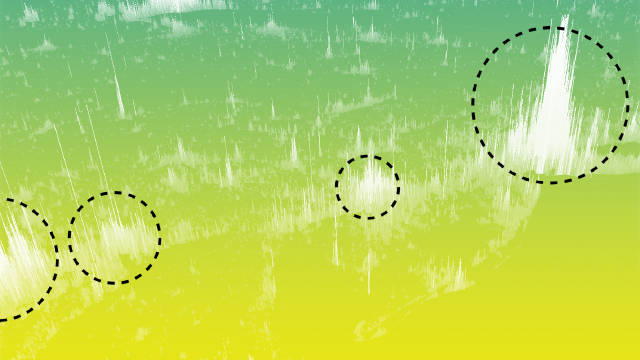
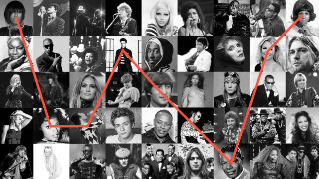

Stories
-
Are Men Singing Higher in Pop Music?
Men’s voices in pop music seem really high. When was vocal register the highest?
By Matt Daniels -
Best Year in Music
A journey through every Billboard top 5 hit to find music’s greatest era
By Matt Daniels -
A People Map of the UK
Where city names are replaced by their most Wikipedia’ed resident.
By Russell Goldenberg, Matt Daniels -
A People Map of the US
Where city names are replaced by their most Wikipedia’ed resident.
By Russell Goldenberg, Matt Daniels -

most viewed
Rappers, Sorted by the Size of their Vocabulary
The number of unique lyrics used within artists’ first 35,000 lyrics
By Matt Daniels -

most buzzworthy
Population Mountains
This is a story about how to perceive the population size of cities.
By Matt Daniels -

most buzzworthy
Human Terrain: Population in 3D
Visualizing the World’s Population as a Terrain
By Matt Daniels -
The Most Emo Lyrics: Emo Rap vs. Dashboard Confessional
Who has more emotionally vulnerable lyrics, emo-rap or Dashboard Confessional?
By Matt Daniels -
What Airport Traffic Tells Us About the World's Megacities
Kinshasa, DR Congo, a city of 13 million people has 13 departing flights per day.
By Matt Daniels -
The Cultural Borders of Songs
We mapped last month’s #1 songs in 3,000 places.
By Matt Daniels -
Are Hit Songs Becoming Less Musically Diverse?
Today’s hit artists are take fewer risks and create a narrower range of sounds
By Matt Daniels, Andrew Thompson -
Mapping Gastronomic Borders in the US
How US culture dictates geographic restaurant patterns
By Matt Daniels -
Plot Trends for Top-Grossing Film from the Past 50 Years
This is a story about how film plots mirror (or shape) historical events.
By Matt Daniels, Russell Goldenberg -
Why Does the US Lead the World in Incarceration?
How we got here is one of the most debated questions in policy.
By Matt Daniels -
Do NBA Refs Favor the Home Team?
Analyzing reviewed calls to rank NBA teams by favorable home court officiating
By Oliver Roeder, Matt Daniels -
The Geographic Divide of Oscars Films
Mapping the popularity of Oscar-nominated films in 2017
By Matt Daniels, Russell Goldenberg, Ilia Blinderman -
The Emergence Of Slang, Using Search Data
Emerging slang, identified by searches for words’ definitions
By Matt Daniels -
Mapping Slavery Against US Incarceration
How do historic incarceration rates differ between slave and non-slave states?
By Matt Daniels -
How Robert Glasper Sampled Miles Davis on “Ghetto Walkin”
An interactive story about the art of sampling
By Matt Daniels -
The 2,452 Wikipedia Pages on which Miles Davis is Mentioned
25 years after his death, you can find Davis' fingerprints on many other ideas.
By Matt Daniels -

most viewed
How Music Taste Evolved
Top 5 songs, from '58-'16, so we can stop arguing about when music was still good
By Matt Daniels -
Ranking the Most Unlikely NBA Comebacks
Identify the most statistically unlikely comebacks this season
By Matt Daniels -
Crowdsourcing the Definition of “Punk”
Looking at playlists to learn how parts of culture perceive genres
By Matt Daniels -
Hollywood's Gender Divide and its Effect on Films
The writers, directors, and producers who make films that fail the Bechdel test
By Matt Daniels, Ilia Blinderman -
The Most Succesful Labels in Hip Hop
Hip hop record labels, sorted by their artists' chart performance on Billboard
By Matt Daniels -
The Most Timeless Songs of All-Time
Using Spotify to measure the popularity of older music
By Matt Daniels -
Outkast, in Charts
A look at Outkast's history through the lens of data
By Matt Daniels